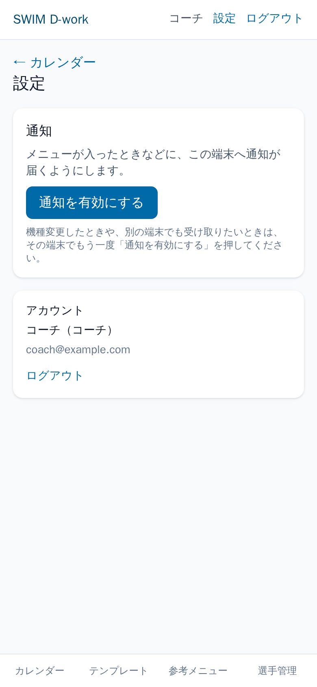
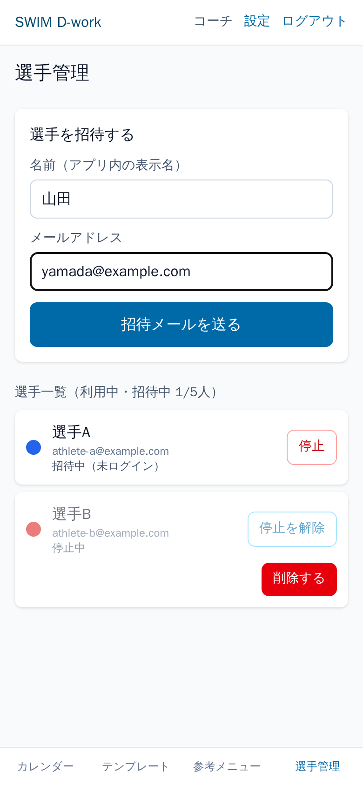
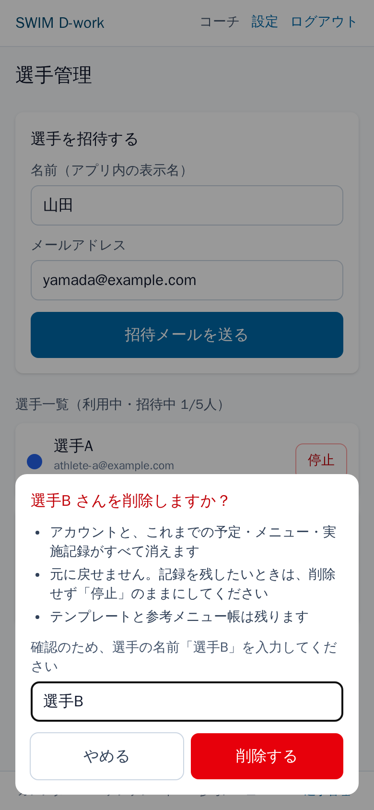
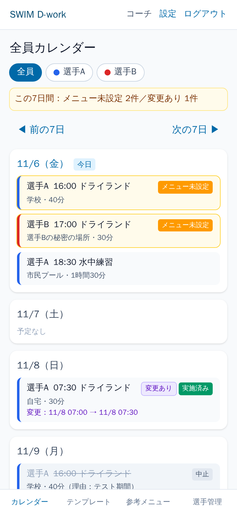
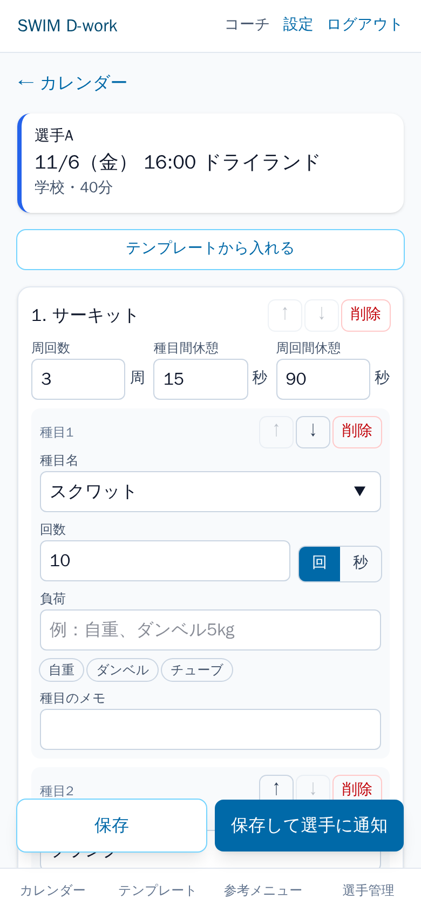
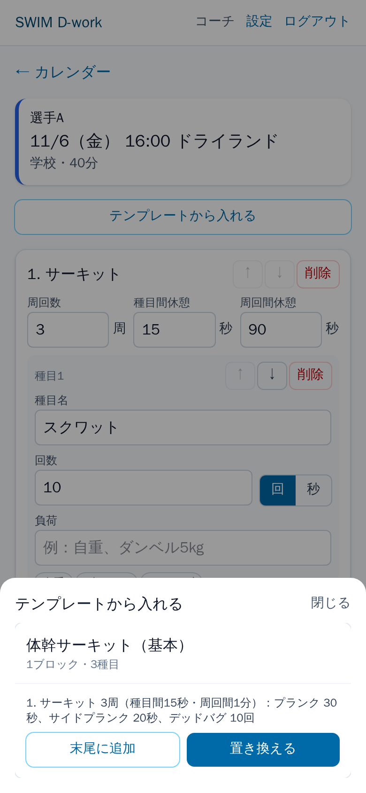
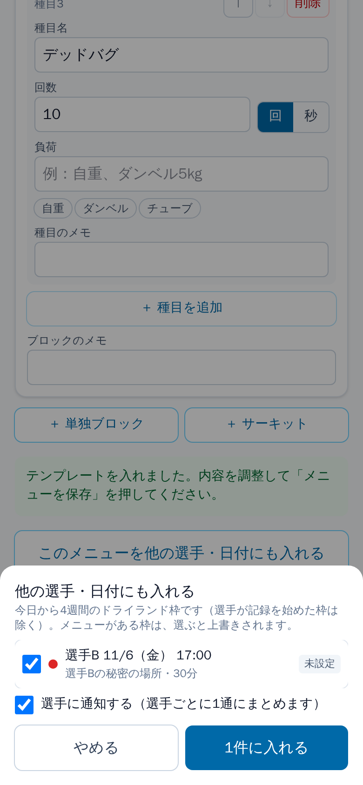
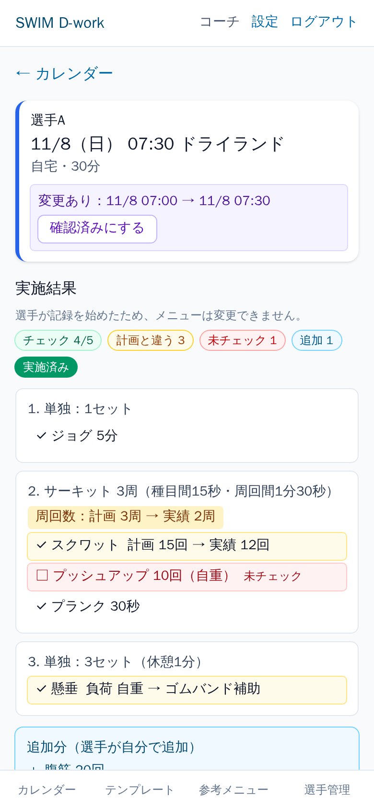
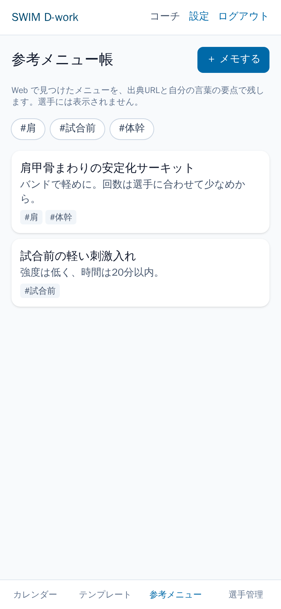
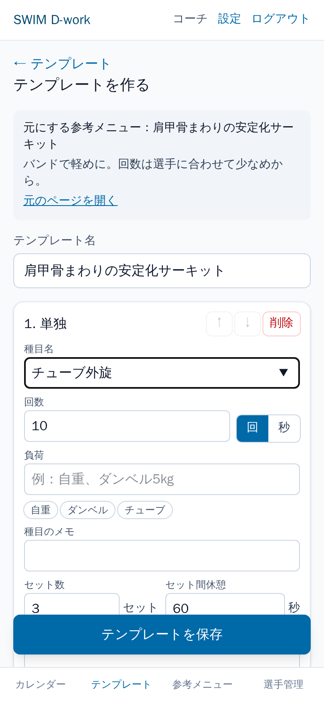

コーチ向け 使い方ガイド
アプリの URL：https://swim-d-work.pages.dev



| 印 | 意味 |
|---|---|
| メニュー未設定 | メニューを入れる必要がある |
| メニューあり | メニューを入れた |
| 未通知 | 保存したが、選手にまだ知らせていない |
| 実施中 実施済み | 選手が記録を始めた／完了した |
| 変更あり | メニューを入れた後に選手が日時などを変えた |
| 中止 | 選手が中止にした（理由も表示） |





どちらもコーチだけが見られます。選手には表示されません。


対象はドライランドの枠だけです（水中練習・試合は通知しません）。
| 届くとき | 通知の例 |
|---|---|
| 毎晩22:00：翌日のドライランドにメニュー未設定の枠がある（なければ届きません） | 明日メニュー未設定：Aさん 16:00 学校 40分／Bさん 18:30 自宅 30分 |
| 前日22時以降に翌日の枠、または当日の枠が追加・移動された（メニュー未設定） | Aさん 明日 07:00 自宅 30分 が追加されました（メニュー未設定） |
| メニューを入れた枠を選手が変更した | Aさん 11/10（火） のドライランドが変更されました（11/10 16:00 → 11/12 16:00） |
| メニューを入れた枠を選手が中止した | Aさん 11/10（火） のドライランドが中止されました（理由：発熱） |